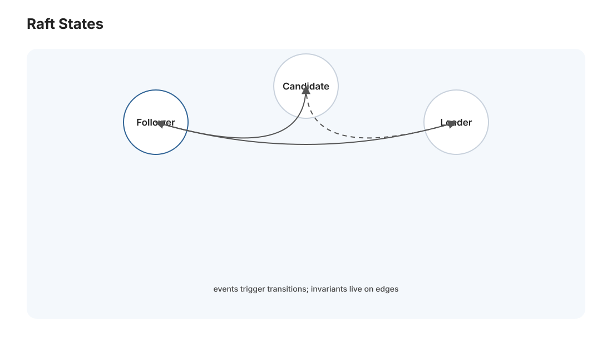
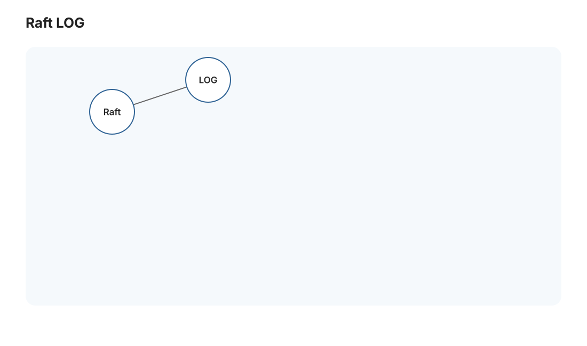
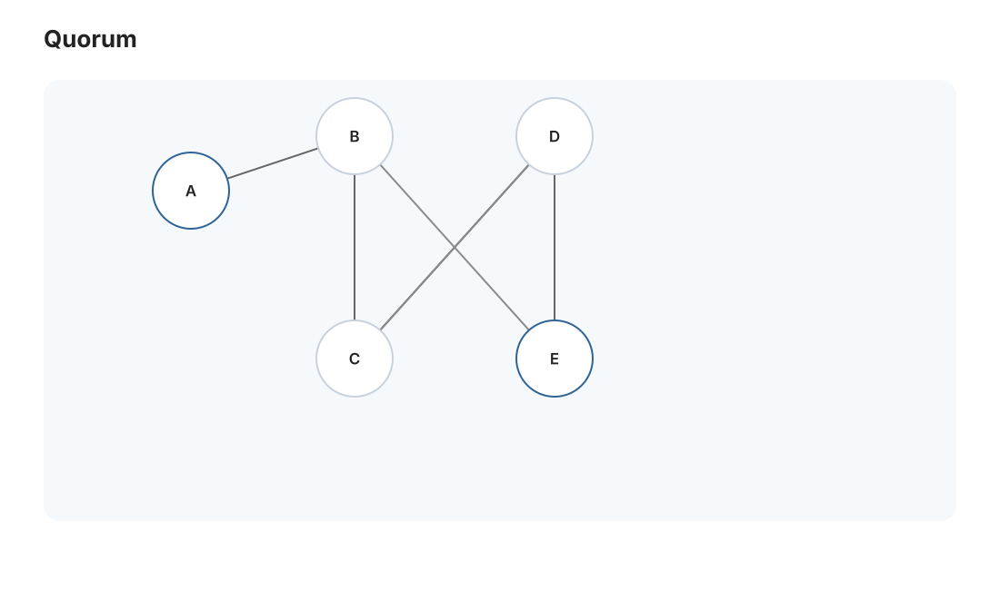

本页目录
分布式 II · 共识与 Raft
对标：MIT 6.824 / Raft 论文（Ongaro & Ousterhout）/ DDIA 第 9 章 ｜ 前置：dist-01（故障、一致性）、db-03（复制日志） 分布式系统的皇冠问题：一群会各自宕机、消息会丢的机器，如何对"发生了什么、按什么顺序"达成一致？ 这叫共识（consensus）。它是分布式数据库、配置中心（etcd/ZooKeeper）、区块链的共同内核。这一页从共识为什么难（FLP 不可能）讲到 Raft——一个被刻意设计得"可理解"的共识算法，也是 [大 Project P03] 的核心。
学习层：分区之后，哪一边还能提交一条命令？
具体谜题：5 个节点被切成 3+2，少数派能不能继续写？
一个 5 节点 Raft 集群原本有 leader，网络分区把节点切成 3 个和 2 个。客户端请求 set x=7 时，哪一边可以选出新 leader、收集足够复制确认并推进 commitIndex？如果 leader 恰好在 2 节点一侧，答案会改变吗？先按多数派规则预测。
最小心智模型：任期、日志和多数派
Raft 把复制状态机拆成选主、日志复制和安全性。leader 为客户端命令分配任期与日志索引，follower 按前一条日志的任期/索引匹配后追加；只有被多数节点复制的前缀才可提交并应用到状态机。
形式机制与不变量
规模为 \(N\) 时多数派为 \(q=\lfloor N/2\rfloor+1\)；任何两个多数派相交，因此两个不同已提交值不能各自被安全地提交。日志匹配不变量是：若两个日志在同一索引和任期相同，则此前缀也相同；leader completeness 要求已提交条目出现在后续任期 leader 的日志中。Raft 牺牲分区少数派可用性换取线性一致提交。
反例与失效边界
没有多数派时，节点可以继续接收本地请求，却不能安全地宣布提交；异步网络下无法从“消息很慢”确定“节点已崩溃”，FLP 说明确定性终止保证需要额外时序假设。选主安全也不等于客户端请求执行恰好一次，重试仍需请求 ID 或幂等设计。
迁移任务：从 quorum 推进到真实实现
在 L06 Raft 实验里注入 3+2 分区、延迟和丢包，逐条记录 term、nextIndex、matchIndex 与 commitIndex；再把 trace 接到 P03-A 的复制日志接口。dist-01 的因果和 CAP 分析提供解释框架，但不替代 L06 的真实选举与日志复制。
交互实验：Raft 多数派、选主与提交
无 JavaScript 时的静态读法：默认 N=5，所以 quorum=3。3+2 分区时，3 节点侧可以选 leader 并取得 3 份日志（leader+2 followers）提交 set x=7；2 节点侧最多得到 2 份，必须停在未提交状态。2+2+1 时没有任何分区块达到 3，全部不能提交。若旧 leader 在少数派，恢复后会以更高任期的多数派日志为准，冲突后缀被回退而非双重提交。
| 分区 | 最大活动组 | quorum | 能提交？ | 日志动作 |
|---|---|---|---|---|
| 无 | 5 | 3 | 可以 | 复制并推进 commit |
| 3+2 | 3 | 3 | 3 节点侧可以 | 少数侧停摆 |
| 2+2+1 | 2 | 3 | 不可以 | 等待重连 |
1. 共识问题与它的不可能性
共识：多个节点各有一个提议值，要达成一致——选出一个值，满足：一致（所有正常节点选同一个）、有效（选的是某人提议的）、可终止（最终能选出）。看似简单，却是分布式最难的问题。
FLP 不可能定理（理论基石）：在异步网络（消息延迟无上界）里，哪怕只有一个节点可能崩溃，没有确定性算法能保证在有限时间内达成共识。为什么：无法区分"节点崩溃"和"消息只是很慢"（dist-01 的核心困难），于是算法可能永远等待。
这不是说共识没法做——而是说必须放松某个假设：实际系统用超时（假设网络"大部分时候"够快、用 timeout 探测故障）来绕过 FLP，换取"几乎总能终止"。理解 FLP 让你明白：所有实用共识算法都在'安全性绝不违背、活性靠网络配合'之间走钢丝——Raft 也不例外。
2. 状态机复制：共识用来干什么
共识的杀手级应用是复制状态机（RSM）：让多台机器维护同一个状态（如一个 KV 存储），只要它们从同一个初始状态出发、按同一顺序执行同一串命令，就会保持一致。问题于是归结为：让所有副本对"命令的顺序"达成共识——即对一个复制日志达成一致：每个节点的日志是同样的命令序列，各自回放即得一致状态。
这就是那条主线的第三次登场（🔗 os-03 文件系统日志 → db-03 数据库 WAL → 这里的 Raft 日志）："把状态变更写成一条不可变的、全序的日志，谁按日志回放谁就得到一致状态"——可靠系统的元思想在三个层次反复出现，这是本站刻意编织的主线，到这里收束。
3. Raft：为可理解而设计的共识【机理级】


Paxos 是第一个正确的共识算法，但出了名地难懂。Raft 明确以"可理解性"为设计目标，把共识拆成三个相对独立的子问题：
① 领导者选举（Leader Election）
- 节点有三态：Follower / Candidate / Leader。正常时一个 Leader、其余 Follower。
- Leader 定期发心跳。Follower 一段时间（选举超时）没收到心跳，就认为 Leader 挂了，转 Candidate、增加任期号（term）、发起投票。
- 多数派投票：得到超过半数选票者当选 Leader。"多数派（quorum）"是 Raft 一切正确性的基石——任意两个多数派必有交集，保证不会同时选出两个 Leader、保证已提交的数据不丢。
- 随机化选举超时避免选票僵持（🔗 呼应 algo-03 用随机打破对称）。
② 日志复制（Log Replication）
- 客户端命令只发给 Leader；Leader 追加到自己日志，并行发给 Followers。
- 当一条日志被多数派确认写入，Leader 就提交（commit）它、应用到状态机、回复客户端。"多数派确认才算提交"保证：即使少数节点崩溃，已提交的命令仍在多数节点上、选出的新 Leader 一定有它（这是安全性的核心论证）。
③ 安全性约束
- 选举限制：只有日志"足够新"的 Candidate 才能当选——保证新 Leader 不会丢失已提交的日志。
- Leader 只提交自己任期的日志（避免一个微妙的已提交日志被覆盖的 bug）。
Raft 的正确性口诀：任何时刻至多一个 Leader；已提交的日志永不丢失、永不改变顺序。这两条靠"多数派交集"贯穿始终。
4. 从共识到生产系统
- etcd / ZooKeeper：用 Raft/ZAB 做分布式配置与协调（服务发现、分布式锁、选主）——Kubernetes（cloud-02）的大脑 etcd 就是 Raft 集群。
- 分布式数据库：每个数据分片是一个 Raft 组（TiDB、CockroachDB）——db-03 的单机事务 + Raft 复制 = 分布式事务数据库。
- Raft 的代价：每次写要多数派往返（一轮 RTT）、Leader 是写入瓶颈——共识买来的一致性不便宜，所以只用在真正需要强一致的地方（配置、元数据），海量数据用最终一致（dist-01 的 AP）。
5. 练习与要点

例 1（多数派为什么是关键） 5 节点集群，为什么"提交需 3 个确认"能容忍 2 个节点崩溃、且不会脑裂？——证明任意两个多数派必相交，这是理解 Raft 全部安全性的一把钥匙。（也解释了为什么集群通常是奇数节点。）
例 2（选举超时随机化） 若所有节点选举超时相同会怎样（选票僵持反复）？随机化如何解决？——随机打破对称，algo-03 的思想在分布式再现。
例 3（脑裂推演） 网络分区把 5 节点切成 3+2，推演哪边能选出 Leader、能否提交、分区恢复后如何合并——验证 Raft 在分区下"少数派停摆、多数派继续"正是 CAP 的 CP 选择（dist-01 收线）。\(\blacksquare\)
▶ 实验 L06（Raft 选主 + 日志复制）：
labs/L06-raft/—— 单机多协程模拟网络（含丢包/延迟），实现选举 + 日志复制的核心。跑在 Mac（Python）。这是 P03 的最小可运行前身。
📋 大 Project P03（第一阶段）· Raft 共识库
教师版作业说明书，不提供完整解。 P03 分两阶段随 dist-02/03 展开，最终是一个分片的、线性一致的分布式 KV。第一阶段只做可复用 Raft 库。
P03-A · Raft 共识库
- 学习目标：把 Raft 的三个不变量写进代码和测试：任期单调、日志匹配、已提交日志不丢。
- 教师提供：单机多节点网络模拟器、可控随机种子、丢包/延迟/分区/崩溃重启故障注入、公开测试分层（election/basic log/persistence/snapshot）。
- 学生任务：① 领导者选举与心跳；② 日志复制、commit index、apply channel；③ 持久化当前任期、投票、日志并支持崩溃恢复；④ 快照与日志压缩。
- 接口约束：Raft 模块只通过
Start(command)、ApplyMsg、持久化接口与上层交互；不得让 KV 逻辑泄漏进 Raft；所有 RPC handler 必须在任期变化时立即降级。- 验收测试：稳定网络 3/5 节点能选主并提交；少数派分区不能提交；leader 崩溃后新 leader 继续提交；节点反复崩溃重启后日志一致；快照后旧日志截断仍能恢复。
- 评分重点：选举 20%，日志复制 30%，持久化 20%，快照 15%，故障测试与调试日志 15%。
- 教师提示：要求学生在报告里列出 Raft 不变量和对应代码位置；这比“测试过了”更能检验理解。
下一页：分布式 III——分布式事务与大系统案例：跨机器的原子操作，以及 MapReduce/一致性哈希/大规模存储怎么落地。